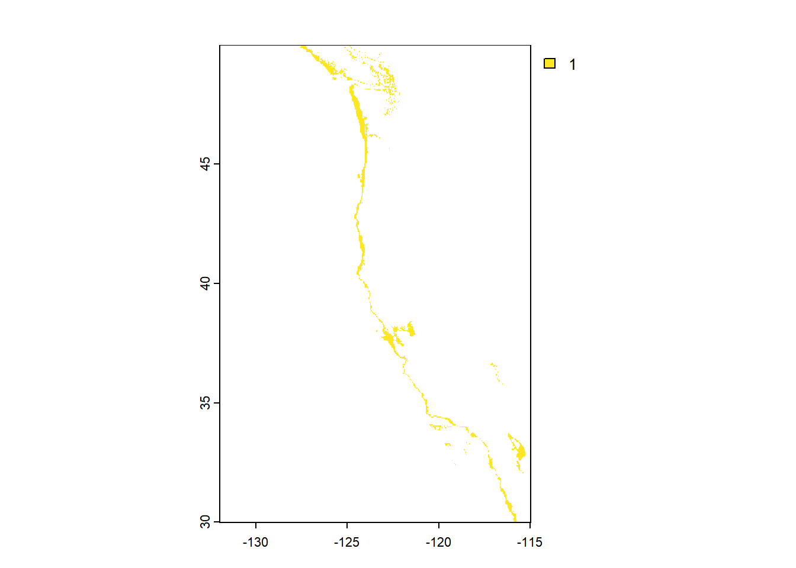
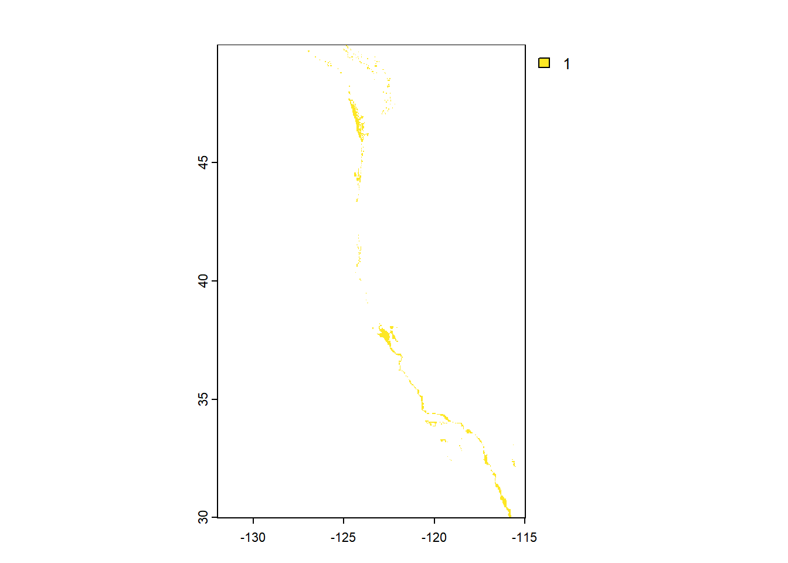

Show the code
library(terra)
library(tidyverse)
library(tmap)
library(kableExtra)
library(here)
library(sf)
library(stars)
library(viridis)Prioritizing potential aquaculture
library(terra)
library(tidyverse)
library(tmap)
library(kableExtra)
library(here)
library(sf)
library(stars)
library(viridis)# Bathymetry
bath <- rast(here('data','depth.tif'))
# Exclusive Economic Zones
eez <- st_read(here('data', 'wc_regions_clean.shp'))
# CA state boundary for final plot
coast <- st_read(here('data', 'coast', 'cb_2018_us_state_20m.shp')) %>%
filter(NAME %in% c('California', 'Washington', 'Oregon')) # Filter to states on West Coast# Sea surface temperature data
sst_2008 <- rast(here('data','average_annual_sst_2008.tif'))
sst_2009 <- rast(here('data','average_annual_sst_2009.tif'))
sst_2010 <- rast(here('data','average_annual_sst_2010.tif'))
sst_2011 <- rast(here('data','average_annual_sst_2011.tif'))
sst_2012 <- rast(here('data','average_annual_sst_2012.tif'))
# Stack rasters using c()
sst_stack <- c(sst_2008, sst_2009, sst_2010, sst_2010, sst_2011, sst_2012)# Check CRS of sst_stack
st_crs(sst_stack) # no CRSCoordinate Reference System:
User input: WGS 84
wkt:
GEOGCRS["WGS 84",
DATUM["unknown",
ELLIPSOID["WGS84",6378137,298.257223563,
LENGTHUNIT["metre",1,
ID["EPSG",9001]]]],
PRIMEM["Greenwich",0,
ANGLEUNIT["degree",0.0174532925199433,
ID["EPSG",9122]]],
CS[ellipsoidal,2],
AXIS["latitude",north,
ORDER[1],
ANGLEUNIT["degree",0.0174532925199433,
ID["EPSG",9122]]],
AXIS["longitude",east,
ORDER[2],
ANGLEUNIT["degree",0.0174532925199433,
ID["EPSG",9122]]]]# Match crs of sst to other CRS
sst_stack <- terra::project(sst_stack, "EPSG:4326")
# Check CRS between data sets
st_crs(bath) == st_crs(sst_stack)[1] TRUEst_crs(eez) == st_crs(sst_stack)[1] TRUE# Add warning to see if CRS match
if(st_crs(bath) == st_crs(eez) & st_crs(eez) == st_crs(sst_stack) & st_crs(bath) == st_crs(sst_stack)) {
print("coordinate reference systems of datasets match")
} else {
warning("cooridnate reference systems to not match")
}[1] "coordinate reference systems of datasets match"# Find mean SST from 2008-2012
sst_mean_k <- mean(sst_stack, na.rm = TRUE) # apply mean directly
# Convert from K to C by subtracting -273.15
sst_mean <- sst_mean_k - 273.15# Crop depth raster to match the extent of the SST raster
bath_crop <- crop(bath, ext(sst_mean)) # match extent
# Match resolutions of SST and depth
bath_rs <- resample(bath_crop, sst_mean, method = "near") # set method - week 4 lab
# Stack rasters for temperature and depth
stack_raster <- c(sst_mean, bath_rs)# Check that the depth and SST match in:
# Resolution
resolution(sst_mean) == resolution(bath_rs)[1] TRUE# Extent
ext(sst_mean) == ext(bath_rs)[1] TRUE# CRS
st_crs(sst_mean) == st_crs(bath_rs)[1] TRUE# Visually check changes of cropped and resampled depth
# Cropped map
tm_shape(bath_crop) +
tm_raster(title = "Depth (m bsl)",
palette = "Blues", midpoint = NA) +
tm_layout(main.title = "Crop Map",
legend.outside = TRUE,
legend.width = 5,
title.size = 2) +
tm_compass(size = 2,
position = c('left', 'top')) +
tm_scale_bar(size = 2,
position = c('right', 'bottom'))# Resampled map
tm_shape(bath_rs) +
tm_raster(title = "Depth (m bsl)",
palette = "Blues", midpoint = NA) +
tm_layout(main.title = "Resampled Map",
legend.outside = TRUE,
legend.width = 5,
title.size = 2) +
tm_compass(size = 2,
position = c('left', 'top')) +
tm_scale_bar(size = 2,
position = c('right', 'bottom'))Recall Oyster optimal growing conditions:
# Reclassify sst and depth into oyster suitable locations
# Create reclassification matrix for sst
sst_reclass_mtx <- matrix(c(-Inf, 11, NA, # Temp below 11 degC is set to NA for unsuitable
11, 30, 1, # Temp from 11-30 degC is 1 indicating suitable
30, Inf, NA), # Temp above 30 degC is unsuitable, set to NA
ncol = 3, byrow = TRUE)
# Create reclassification matrix for depth
bath_reclass_mtx <- matrix(c(-Inf, -70, NA, # Depth below 70 mbsl set to NA indicating unsuitable
-70, 0, 1, # Depth from 0-70 mbsl is 1 for suitable
0, Inf, NA), # Depth greater than 0 m bsl set to NA for unsuitable
ncol = 3, byrow = TRUE)# Use reclassification matrix to reclassify sst and depth
# Depth reclassification
bath_rcl <- classify(stack_raster$depth, rcl = bath_reclass_mtx) # select only depth
# Initial plot of depth
plot(bath_rcl)
# SST/Temp reclassification
sst_rcl <- classify(stack_raster$mean, rcl = sst_reclass_mtx) # select only mean
# Initial plot of temperature
plot(sst_rcl)# find locations that satisfy both SST and depth conditions
# Use lapp to multiply and determine conditions
# Anything multiplied by unsuitable will be 0, suitable will be 1
location <- lapp(c(bath_rcl, sst_rcl),
fun = function(x,y){return(x*y)})
# Initial plot of suitable locations
plot(location)
# Select suitable cells within West Coast EEZs
# Mask location raster to EEZ locations
masked_location <- mask(location, eez)
# Initial plot
plot(masked_location)# Find the area of grid cells using cellSize
suitable_area <- cellSize(x = masked_location, # Selecting suitable locations from above
mask = TRUE, # When true, previous NA will carry over
unit = 'km') # Selecting km from data
# Initial plot
plot(suitable_area)# Find the total suitable area within each EEZ
# Rasterize EEZ data
eez_raster <- rasterize(eez,
suitable_area, # to this raster
field = 'rgn') # Transfer values to each eez region
# Initial plot
plot(eez_raster)# Use zonal algebra to aggregate a grouping variable
eez_suitable <- zonal(x = suitable_area,
z = eez_raster, # Raster representing zones
fun = 'sum', # To add up total area
na.rm = TRUE)
# Print suitble area by EEZ
print(paste0("Oyster suitable area in ", eez_suitable$rgn[1], " is ", round(eez_suitable$area[1], digits = 2), 'km'))[1] "Oyster suitable area in Central California is 4973.78km"print(paste0("Oyster suitable area in ", eez_suitable$rgn[2], " is ", round(eez_suitable$area[2], digits = 2), 'km'))[1] "Oyster suitable area in Northern California is 535.69km"print(paste0("Oyster suitable area in ", eez_suitable$rgn[3], " is ", round(eez_suitable$area[3], digits = 2), 'km'))[1] "Oyster suitable area in Oregon is 1655.96km"print(paste0("Oyster suitable area in ", eez_suitable$rgn[4], " is ", round(eez_suitable$area[4], digits = 2), 'km'))[1] "Oyster suitable area in Southern California is 3811.8km"print(paste0("Oyster suitable area in ", eez_suitable$rgn[5], " is ", round(eez_suitable$area[5], digits = 2), 'km'))[1] "Oyster suitable area in Washington is 3750.69km"# Map of suitable EEZ for oysters
# Suitable oyster area
tm_shape(eez_raster) +
tm_raster(title = "Total Suitable Area",
palette= (c("#65AFFF", "#5899E2", "#335C81", "#4A85BF","#274060", "#1B2845"))) +
# CA Coast
tm_shape(coast) +
tm_polygons(col = 'tan') +
# Map layout
tm_layout(
legend.outside = TRUE,
main.title = "Suitable Area for Oysters\nby EEZ Region",
title.size = 5,
legend.width = 5,
legend.outside.size = 0.5) +
tm_compass(position = c(0.025, 0.1),
size = 1) +
tm_scale_bar(position = c(0.1, 0.02),
text.size = 5)# Function for any animal
suitable_animal_zone <- function(min_sst, max_sst, min_depth, max_depth, species_name) { # specify arguments
# Reclassifying
# Create reclassification matrix
# Create reclassification matrix for sst
sst_reclass_animal <- matrix(c(-Inf, min_sst, NA,
min_sst, max_sst, 1,
max_sst, Inf, NA),
ncol = 3, byrow = TRUE)
# Create reclassification matrix for depth
bath_reclass_animal <- matrix(c(-Inf, min_depth, NA,
min_depth, max_depth, 1,
max_depth, Inf, NA),
ncol = 3, byrow = TRUE)
# Apply reclassification
# Stack rasters for temperature and depth
stack_raster_animal <- c(sst_mean, bath_rs)
# Depth reclassification
bath_rcl_animal <- classify(stack_raster_animal$depth, rcl = bath_reclass_animal)
# SST/Temp reclassification
sst_rcl_animal <- classify(stack_raster_animal$mean, rcl = sst_reclass_animal)
# Finding suitable area
# Function to find suitable areas
location_animal <- lapp(c(bath_rcl_animal, sst_rcl_animal),
fun = function(x,y){return(x*y)})
# Mask location raster to EEZ locations
masked_location_animal <- mask(location_animal, eez)
# Find grid area
suitable_area_animal <- cellSize(x = masked_location_animal,
mask = TRUE,
unit = 'km')
# Rasterize EEZ data
eez_raster_animal <- rasterize(eez,
suitable_area_animal,
field = 'rgn')
# Find suitable area by EEZ
# Use zonal algebra to aggregate a grouping variable
eez_suitable_animal <- zonal(x = suitable_area_animal,
z = eez_raster_animal,
fun = 'sum',
na.rm = TRUE)
# Print suitable area by EEZ
print(paste0("Suitable area in ", eez_suitable_animal$rgn[1],
" for ", species_name," is ",
round(eez_suitable_animal$area[1], digits = 2),
'km'))
print(paste0("Suitable area in ",
eez_suitable_animal$rgn[2],
" for ", species_name, " is ",
round(eez_suitable_animal$area[2], digits = 2), 'km'))
print(paste0("Suitable area in ", eez_suitable_animal$rgn[3],
" for ", species_name, " is ",
round(eez_suitable_animal$area[3], digits = 2), 'km'))
print(paste0("Suitable area in ", eez_suitable_animal$rgn[4],
" for ", species_name, " is ",
round(eez_suitable_animal$area[4], digits = 2), 'km'))
print(paste0("Suitable area in ", eez_suitable_animal$rgn[5],
" for ", species_name," is ",
round(eez_suitable_animal$area[5], digits = 2), 'km'))
# Map of suitable EEZ for animal
# Suitable oyster area
tm_shape(eez_raster_animal) +
tm_raster(title = "Total Suitable Area",
palette= (c("#65AFFF", "#5899E2", "#335C81", "#4A85BF","#274060", "#1B2845"))) +
# CA Coast
tm_shape(coast) +
tm_polygons(col = 'tan') +
# Map layout
tm_layout(
legend.outside = TRUE,
main.title = ("Suitable Area\nby EEZ Region"),
title.size = 5,
legend.width = 5,
legend.outside.size = 0.5) +
tm_compass(position = c(0.025, 0.1),
size = 1) +
tm_scale_bar(position = c(0.1, 0.02),
text.size = 5)
}# Test function on oyster to confirm function
suitable_animal_zone(min_sst = 11, max_sst = 30,
min_depth = -70, max_depth = 0,
species_name = "Oyster")[1] "Suitable area in Central California for Oyster is 4973.78km"
[1] "Suitable area in Northern California for Oyster is 535.69km"
[1] "Suitable area in Oregon for Oyster is 1655.96km"
[1] "Suitable area in Southern California for Oyster is 3811.8km"
[1] "Suitable area in Washington for Oyster is 3750.69km"
Now that we can reproduce our results with the function, apply it to our animal of choice:
Selecting a species with some reasonable potential for commercial consumption
Homarus americanus - American lobster - SST: 40-70F â> 4.4-21.1C - Depth: 4 - 50 m
# Plug in lobster values
suitable_animal_zone(min_sst = 4.4, max_sst = 21.1,
min_depth = 4, max_depth = 50,
species_name = "American Lobster")[1] "Suitable area in Central California for American Lobster is 51.8km"
[1] "Suitable area in Northern California for American Lobster is 16.51km"
[1] "Suitable area in Oregon for American Lobster is 61.09km"
[1] "Suitable area in Southern California for American Lobster is 160.39km"
[1] "Suitable area in Washington for American Lobster is 173.9km"tribble(
~Data, ~Citation, ~Link,
"Sea Life Base", "Palomares, M.L.D. and D. Pauly. Editors. 2024. SeaLifeBase. World Wide Web electronic publication. Retrieved: 11/14/24 from www.sealifebase.org, version (08/2024).","[Lobster Data ](https://www.sealifebase.ca/summary/Homarus-americanus.html)",
"Sea Surface Temperature Data", "NOAA Coral Reef Watch Version 3.1 (2018). Retrieved: 11/14/24", "[SST Data](https://coralreefwatch.noaa.gov/product/5km/index_5km_ssta.php)",
"Bathymetry Data", "British Oceanographic Data Centere. Retrieved 11/14/24 from https://www.gebco.net/data_and_products/gridded_bathymetry_data/#area", "[Depth Data](https://www.gebco.net/data_and_products/gridded_bathymetry_data/#area)",
"Cartographic Boundary Files - Shapefile Data", "United States Census Bureau. Retrieved 11/28/24 from https://www.census.gov/geographies/mapping-files/time-series/geo/carto-boundary-file.html", "[US Coast Data](https://www2.census.gov/geo/tiger/GENZ2018/shp/cb_2018_us_state_20m.zip)",
"Exclusive Economic Zones Data", "MarineRegions.org. Retrieved 11/14/24 from https://www.marineregions.org/eez.php", "[EEZ Data](https://www.marineregions.org/downloads.php)",
"American Lobster", "Defenders of Wildlife. Retrieved 11/28/24 from https://defenders-cci.org/landscape/climate-factsheets/ClimateChangeFS_American_Lobster.pdf", "[Lobster Temperature Range Data](defenders.org/climatechange)"
) %>%
kable()| Data | Citation | Link |
|---|---|---|
| Sea Life Base | Palomares, M.L.D. and D. Pauly. Editors. 2024. SeaLifeBase. World Wide Web electronic publication. Retrieved: 11/14/24 from www.sealifebase.org, version (08/2024). | Lobster Data |
| Sea Surface Temperature Data | NOAA Coral Reef Watch Version 3.1 (2018). Retrieved: 11/14/24 | SST Data |
| Bathymetry Data | British Oceanographic Data Centere. Retrieved 11/14/24 from https://www.gebco.net/data_and_products/gridded_bathymetry_data/#area | Depth Data |
| Cartographic Boundary Files - Shapefile Data | United States Census Bureau. Retrieved 11/28/24 from https://www.census.gov/geographies/mapping-files/time-series/geo/carto-boundary-file.html | US Coast Data |
| Exclusive Economic Zones Data | MarineRegions.org. Retrieved 11/14/24 from https://www.marineregions.org/eez.php | EEZ Data |
| American Lobster | Defenders of Wildlife. Retrieved 11/28/24 from https://defenders-cci.org/landscape/climate-factsheets/ClimateChangeFS_American_Lobster.pdf | Lobster Temperature Range Data |
Note: Oyster data was provided on assignment website but can also be found at Sea Life Base.